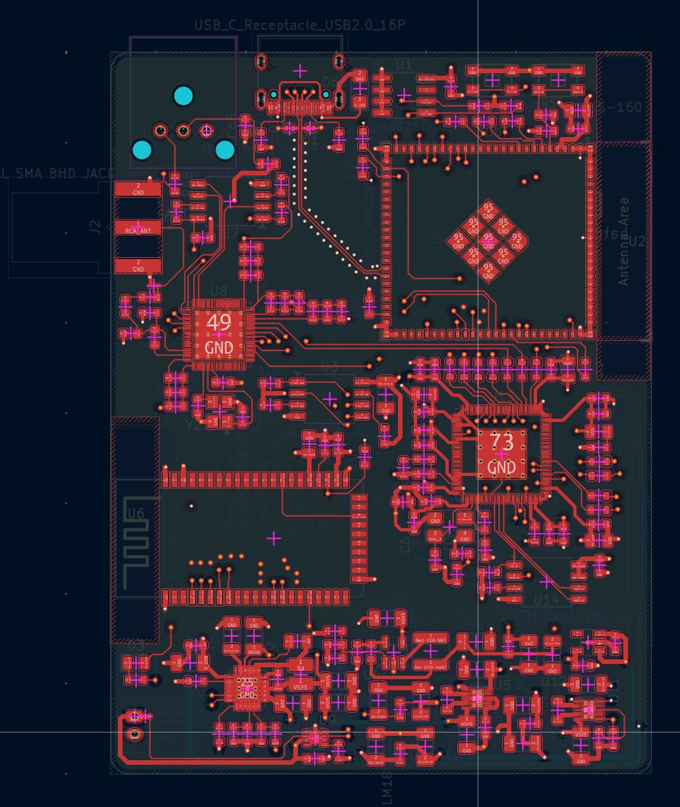

New
DigiRadio v2
The second version of DigiRadio runs on a battery and has a much more powerful DSP and an optical S/PDIF output. All on a 6-layer, 60 × 80 mm board.


What changes from v1
| v1 | v2 | |
|---|---|---|
| DSP | ADAU1701 | ADAU1452: far more processing power, more I²S ports, ASRCs, self-boot from EEPROM |
| Controller | ESP32-S3 | ESP32-S31-WROOM-3 with 128 Mbit of external flash |
| Bluetooth | FSC-BT1035 | FSC-BT1058, on its own filtered 3.3 V rail |
| Outputs | Bluetooth | Bluetooth and optical S/PDIF (TOSLINK) |
| Power | USB-C | USB-C and a Li-ion battery with charger and fuel gauge |
| Board | 6 layers, 50 × 90 mm | 6 layers, 60 × 80 mm |
How it works
The audio path stays fully digital. The ADAU1452 is the hub: it takes three I²S inputs (radio, Bluetooth and ESP32), sends audio back to the Bluetooth module and the ESP32, and drives the optical S/PDIF output, so the radio can also feed an amplifier or a soundbar.
Si4684
Silicon Labs
DAB/DAB+/FM tuner with an SMA antenna jack, its own 19.2 MHz crystal and SPI flash for its firmware.
ADAU1452
Analog Devices SigmaDSP
The audio core: EQ, presets, source mixing and the S/PDIF output. It boots from a 1 Mbit SPI EEPROM.
FSC-BT1058
Feasycom
Bluetooth audio module, controlled by the ESP32 over UART.
ESP32-S31
Espressif, WROOM-3 module
Runs the firmware, controls the tuner and the DSP, and streams web radio and phone audio into the DSP. 128 Mbit external flash and USB-C.
On battery
v2 is designed to be portable. A Texas Instruments BQ25896 charges the battery from USB-C and a MAX17048 fuel gauge reports how much charge is left, so the app can show it.
- Two TPS63031 buck-boost converters for separate digital and audio 3.3 V rails.
- A low-noise TPS7A20 LDO for the tuner's 1.8 V rail.
- A TLV62568 buck for the DSP's 1.2 V core.
For the battery I'm weighing two 18650 cells in parallel or a slim pack: the choice isn't made yet.
The board
Six impedance-controlled layers, 50 Ω for RF and 90 Ω differential for USB, in 60 × 80 mm. Tap an image for full resolution.


Checked with BoardLab
Before ordering, I had the board reviewed by BoardLab, a PCB analysis tool I develop. It reads the schematic, the layout and the datasheet of every IC and tells you whether the board can be ordered, citing the datasheet page behind each finding. On earlier revisions it caught real issues, such as missing I²C pull-ups, crystal load and drive level, and the DSP PLL filter. The full story is on the Development page.
Fabrication
The project is published on PCBWay, with Gerbers and bill of materials, and is entered in their 9th Project Design Contest. This time I'm assembling the board myself: I order only the bare PCBs from PCBWay and solder the parts by hand.
Firmware and app
The goal is to run the same firmware as v1, adapted to the new pins and the new DSP, and the same igiRadio app on both boards.
Fully open
The KiCad project, schematic and bill of materials are in the Hardware-v2 folder on GitHub, under CERN-OHL-S v2. You can download the 3D STEP model of the board (2.6 MB, zip), for example to design an enclosure.